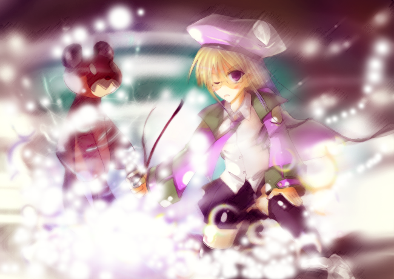

第二話「プフェールト、崩壊（前編）」
「―─で、お嬢ちゃんは本当にティルなのか？」
怪訝な目で俺を見ながら尋ねてくるダイン。
「ああ、そうだよ。俺も正直─―たったいま驚いているけど、どうやら俺はこんなナリにされちまったようだ。……ったく、なんでこんなことに……」
はぁ、とため息をつく。
かつてアウトローをきどっていた俺のすばらしい肉体は失われ、代わりにこんなロリッ娘にされてしまっていた。
「―─まだ、信じられねぇな……あいつがこぉぉんな可愛い娘になるなんてよ……どう考えてもなぁ」
「─―む」
むか。
まぁ、普通はそれが当然の反応なのだろうが、なんかムカついた。
……こうなったら。
「おし、なら否が応でもお前が信じざるを得なくしてやらぁ」
そういうなり、俺は錬成陣を書くための絵石（ドローストーン）を取り出そうとした。
─―絵石ってのは、読んで字の如し、絵や文字を書くための石のこと。
主に武闘都市シュテルンで採れるものだ。
─で、俺はそれを服から取り出そうとした……んが。
ずでっ。
「うぐぁっ……」
服の中で転んでしまった。
今の俺は、かつて身体が大人だったときの服装のままロリータ化してるので、辛うじて頭が出てる程度でしかない。
そんな状態で服のポケットから取り出そうとしたため転倒してしまったのだった。
「―─ああっもう！ ……先に服を変えちゃる！」
半ばヤケになった俺は、服の中でもとの下着を身体に巻きつけ、身体を一応守るようにして服から這い出る。
そしてあとに残ったローブと帽子を中心に、先ほど取った絵石で陣を描く。
これが、錬金術に必要な「錬成陣」。
魔術師の扱う「魔法陣」とは違い、錬金術には必須であるものだ。
この錬成陣に、自分が今から錬成しようとするもののイメージを織り込んでゆく。
材質、手触り、構造、大きさ――それらを同時に織り込まなければならない。
それを複雑に成し得るのが錬金術師であり、俺である。
そんなこんなで陣が完成する。
「っし……錬金・発動！(alchemy on!)」
カッ！
その言葉と共に、錬成陣が光りだす。
「っ─―、れ、錬金術！？」
ダインの驚く声が後ろでする。
─―まぁ、こんなガキが錬金術使うとか普通思わんよな…。
……いかん、自分でいってて悲しいぞ。
パリッ。
錬成が終わり、そこには今の俺のサイズ、即ち少女サイズの服一式（下着まで）が創られていた。
詳細は、プリーツスカート、長袖のローブにブラウス。そして……まぁ、下着ってとこだ。
やっぱ大人よか小さくて布があまるから作れるよなぁ……下着。
俺はぱっぱと着替えを済ませ、再び錬成陣を引き始める。
「─―っ、お、おい、今度は何を作るつもりだ…！？」
先ほどまで驚きで固まってたダイン（よく固まるなコイツ）。
「ああ――だから、俺とお前しか知らないお前の秘密だよ！」
そして、慣れない身体で必要なもの―─布・ビーズ・綿でいいかな？―─を集め、陣の中に置く。
「錬金・発動」
カッ！

二度目の錬成が終わり、陣の中には一つの熊の縫い包みができていた。
「っ―─！？ そ、それは……！！」
みるみる顔が青ざめていくダイン。
ふっふっふ……。
「この縫い包み……記憶をもとに作ってみたけど、結構忠実にできたな。ダイン、覚えてるよな？ お前、これでリアンダに……」
「わーっ、わーっ！ 判った！ お前をティルだって信用するからもうそのことは忘れてくれぇぇぇ！！」
途端、顔を赤くしてまくし立てるダイン。
……こいつの唯一の弱み、こういうときに使えるぜ。
「─―で、なんだってそんな姿になったんだ、おめーは」
当然持つであろう疑問を俺にぶつけてくる。
「知るか、ンなこたぁ俺が聞きてぇよ……。覚えているのはあの魔術師から貰った箱を開ける前までで……」
そこで、ようやく気づいた。
あの魔術師が言っていたことの意味が。
あの箱は、魔術を封印したパンドラボックスだったのだ。
パンドラボックス―─。魔力や呪いを封じ込め、開けた者へ攻撃する「魔術罠（マジック・トラップ）」の一種。
おそらく、あの魔術師が創り出したという魔術が入れられていたのだ。
確かに最高傑作なのだろう。
古今東西、変身系魔術で対象の性別・年齢を、憑依無しで変化させることなんかできやしない。
確かに、そういうものなら貴重だし、魔術師に売れば一生遊んで暮らせる金が手に入るくらいのものになるだろう。
「あンのヤロゥ……絶対捕まえて元に戻させちゃる！ おい、ダイン！すぐに城へ向かうぞ！」
「でぇっ！？ い、今からかよ！？」
時刻は10時半を過ぎている。
こんな時間にマスターの城に訪れても、門兵が入れてくれないだろう。
が、そんなことは知らん。
「いいから行くんだっての！ あの魔術師、絶対につかまえてやる……！」
そういうわけで、俺はダインと共に城へ行くことになった。
「ったく……、なんだって俺まで……」
「俺だけじゃ事情、マスターに説明してもわかんねぇだろーが。お前は俺の証人だってことだよ」
城への道でぼやくダインに、俺はそう言った。
「けどよ……明日でもいいんじゃねぇの？わざわざこんな時間に行かなくてもよぉ……。俺、眠いんだけど」
目をこすりながらダインは言った。
こいつは、子供みたいに「夜は10時には寝る」のが主義だそうだ。
ちなみに、今の時刻は11時を過ぎた所。
あれからもう30分過ぎていた。
「うっさい。ちゃんとついて来い。さもなきゃ朝飯も抜きだ」
そう言い捨てて、俺はずんずか前を行く。
ダインは自分ではメシを作ることが出来ないので、これは堪えるのだ。
「……あーもう、わかりましたよ、いきゃぁいいんでしょうが！」
そう言って諦めたのか、ダインは渋々ながらも歩き始めた。
「止まれ！」
城門にいた門兵に声をかけられ、俺たちは立ち止まった。
「こんな時間に子供がマスターの城へ何用だ！ さっさと自分のお家へ帰りなさい！」
いかにも俺は近所の子供で〜す、といったふうに言われる。
……むっかぁぁぁぁぁぁぁ！
「無礼者！！」
「っ！？」
俺は声を張り上げた。
「この私を誰と心得るか！ 我が名は第一級錬金術師にしてこの錬金都市の術師長たりし、ティルミット＝バルティシアなるぞ！」
格式ばって言ってみる。
……しかし。
「―─馬鹿なことを申すな！ ティルミット様は男性で、しかも貴様のようなガキではないわ！ これ以上我々を馬鹿にするようであれば、この場で―─」
「ガ……！？」
キだとこんにゃろう、と言おうとした時。
「あー、ちぃっとばっかし待ってくれねぇかな」
ダインが口を出した。
「なんだ貴様―─む、ダイン殿か。これは失礼した」
と、門兵は一礼する。
─―な、なんなんだその態度の変わりようはっ！？
くそー……元に戻ったら仕返ししてやるっ！
ちなみにダインは俺の友人なので、門兵とも顔見知りだ。
「かいつまんで言うとだな……そこのちっこい女の子は、間違いなくティルだ」
「は―─！？」
ダインの言葉に驚く門兵。
無理もない……無理もないんだが、その、やはりむかつく。
それにちっこいってゆーな！
好きでこんな風になったわけじゃねぇってのっ！
「し、しかし……あれはどうみても」
「ああ、まずティルには見えねえよな、こんな可愛い女の子がよ。まぁ、俺も事情はよく知らんが、呪いがかかっちまったらしい。――あ、他にも特徴があるぜ。金髪、スミレの瞳、紫系のローブ。あと、やたらと短気で、眼鏡だろ。んで馬鹿だ。それに……」
ぷちっ。
「―─っ、この、さっきから黙ってきいてりゃぁ！ 馬鹿とは何だ馬鹿とは！ 助けた人からお礼に貰った品が呪いの箱だなんて普通考えねぇだろっ！？ それにちっこいだと！？ 俺は好きでこうなったんじゃねぇんだよボケ！ そして、俺は男だぁぁぁぁぁぁぁっ！」
はー、はー。
たまりにたまった怒りを一気に吐き出した。
「─―それに、だ。こんな口の悪い奴なんざ、ティルを除いて他にいねぇと思うぜ？」
俺を親指で示し、ダインはそう言った。
「おお、確かに！」
で、納得すんのかおまいはっ！
「てめ……」
「これでいいだろ？こいつはティルだ。――つーわけで、ちぃっと城にいるはずの魔術師に用があるってんで来たわけさ。……で、通してくんねぇかな？」
「む……了解した。通るがよい。但し、マスターはお休みだ。くれぐれも大きな音を立てるでないぞ」
「あいよ。─―ほら、行くぞティル」
「わ、わかったよ！―─って、わわっ！背中つかむなって！一人で歩けるから！」
俺はそのまま引きずられるようにして城へと入った。
城内は静まり返り、小さな蝋燭の火だけが光源となっていた。
「ここまで薄暗くなるもんかね…」
ダインがそう言葉を漏らした。
「お前、昔から暗いとこダメだったもんな」
俺は笑いながらそう言った。
「う……うるせぇ！ そういうティルだって夜、トイレ一人で行けなかっただろ！」
「んだと！？ いつの話だよそりゃ！」
などと喧嘩している時。
ドゴォゥン！！
『！？』
爆発音。
それは、俺たちが向かおうとしていた医務室からだった。
「なんだ！？」
「こっちだ！」
その音に、城内の兵士たちも駆けつけてくる。
「俺たちも急ごう！」
そう言って俺は駆け出した。
「お、おいティル！ 待ってくれ〜！」
慌てて走り出すダイン。
一体、何が起きたんだ―─！？
「これ……は」
現場に駆けつけたとき、そこはさながら戦場の爪あとだった。
真っ黒に焦げ、焼け爛れた医務室。
そこには、一つのヒトガタがあった。
「……医務室の」
辛うじて残っていた衣服の欠片から、それが医務室にいた魔法医であったことが分かった。
「――っ、誰がこんなことを！」
俺は声を荒立てる。
「おやおや、もう鼠が集まって参りましたか」
「─―っ！？」
声は、頭上から響いてきた。
俺は天井を見上げる。
「っ─―、お前……！」
そこにいたのは、紛れも無い。
俺が助けた、あの魔術師だった。